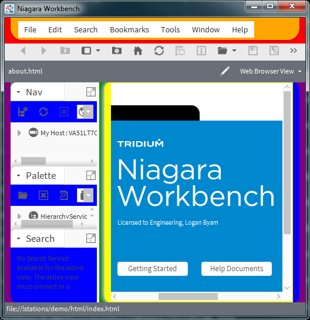

This document will describe the parts of the UI that are available for theming, the general process of creating a theme module, as well as provide details and tips.
| bajaui | The Java UI technology used heavily by Workbench to render things like the Workbench nav tree, Px widgets, and wizard dialogs. It is styled using files written in a Niagara-specific syntax called NSS. |
| JavaFX | A UI technology that is distributed as part of Java 8 itself. It has a number of additional capabilities beyond what bajaui provides, like rounded corners and drop shadows. It is styled using a specialized set of CSS rules. In Niagara 4, Workbench uses JavaFX to render certain elements like toolbars and menu buttons. |
| Hx | A framework carried forward from Niagara AX. It runs in the station to generate web interfaces using HTML and JavaScript. |
| bajaux | A new framework in Niagara 4, based on HTML and JavaScript. It is used to create browser-based Niagara applications like Property Sheet, Web Chart, and User Manager. It is styled using pure CSS. |
themeX/themeX-ux/ | Contents | Link |
|---|---|---|
src/fonts/ | Fonts | Fonts |
src/fx/ | CSS used to style JavaFX elements of Workbench. | JavaFX |
src/hx/ | CSS used to style Hx views. | Hx |
src/imageOverrides/ | Theme-specific replacements for icons from individual Niagara modules. | Icon Overriding |
src/nss/ | NSS files used to style Workbench. NSS syntax in 4.0 is exactly the same as in AX. | bajaui |
src/sprite/ | Spritesheet image and CSS file used to minimize the number of network calls necessary to retrieve icons in web-based views. | Sprites |
src/ux/ | CSS used to style bajaux views, including the Shell Hx profile. | bajaux |
module-include.xml | Used to identify the module as a theme module. | |
themeX-ux.gradle | Used to include the module in a build. |
Although it is possible to create a brand-new theme module from scratch, it is much easier to select an existing theme that comes closest to your desired look, then copy and make modifications to that theme. As part of this tutorial, we will use themeZebra as a basis for our new themeOkapi (we love our striped ungulate mammals here at Tridium).
The process of creating a theme module is very similar to creating any other Niagara module. The process outlined below will result in an exact copy of themeZebra, ready for modification.
Create the folder structure for your module: themeOkapi/themeOkapi-ux/.
Create a src directory in themeOkapi-ux and extract the contents of themeZebra-ux.jar into it.
Move the following files from src into the root of themeOkapi-ux.
cssTemplate.mustacheGruntfile.jspackage.jsonDelete META-INF.
Ensure that any remaining references to themeZebra in these files are updated to reference themeOkapi instead.
Create a themeOkapi-ux.gradle file:
description = "Tridium Zebra Okapi"
niagaraModule {
moduleName="themeOkapi"
preferredSymbol="toka"
runtimeProfile="ux"
}
jar {
from('src') {
include 'fonts/'
include 'fx/'
include 'hx/'
include 'imageOverrides/**/*.png'
include 'less/**/*.*'
include 'nss/'
include 'sprite/'
include 'ux/'
}
from ('.') {
include 'cssTemplate.mustache'
include 'Gruntfile.js'
include 'package.json'
}
}
Create a module-include.xml file:
<defs>
<def name="themeName" value="themeOkapi" />
</defs>
Final directory structure should resemble the Theme Root Directory Structure above.
To build your theme, run
gradlew :themeOkapi-ux:jar
To select your theme, open Workbench, and Click Tools > Options > General > Active Theme > Okapi, then restart Workbench.
NSS is not CSS. NSS only affects Workbench, not online content.
NSS (Niagara Style Sheets) is used to enable styling of fonts, colors, padding, and several other attributes on BWidgets and wiresheet Glyphs. Much like DOM components are styled by CSS, BWidgets and wiresheet Glyphs can be individually assigned style classes and style IDs. Styles can then be assigned to these classes/IDs rather than solely to widget types.
In its current form, NSS does not provide any information on how to paint a particular widget; it only provides details on what to paint. That is, given a widget with a certain type, style class, or ID, the NSS can tell you what font size, font color, background color, etc. that the widget should receive, but it is still up to the widget itself to do the actual painting. It is entirely possible to write a custom widget whose paint() method paints itself neon orange, regardless of what the theme might say.
A theme requires at least one file with the extension .nss to work. If you have more than one, each .nss file can be individually selected as its own theme. That way, you can have several themes with different color schemes that share the same set of custom icons!
Unless using the default file name of theme.nss, the name of the .nss file itself will be used as the selectable display name. The word “theme” from your module name is automatically removed.
module://themeTridium/nss/theme.nss will show up as Tridiummodule://themeTridium/nss/OrangeAndPurple.nss will show up as Tridium/OrangeAndPurpleIt is possible to define a default theme for your brand by adding a line or two to brand.properties. Both lines are optional.
workbench.theme.default | Specifies the default theme for the current brand (Tridium uses “Lucid” by default). |
workbench.theme.locked=true | Locks the workstation into using the default theme. |
When creating a button or label in the PX editor, there are three ways of assigning it fonts, colors, and such. You can…
In the first two scenarios, NSS is completely ignored. Widget properties take precedent. In the case of a Custom Widget written by an end user, it is up to the widget itself to decide whether or not to respect the theme.
Basic Example:
// An NSS file is really just a set of key-value pairs.
// The key is always a string.
// The value can be a string:
font: 12pt Tahoma;
color: black;
// ... or it can be another NSS node:
button {
color: blue;
}
.green-widget {
color: green;
}
// This NSS file only really has five properties: font, color, button, label,
// and .green-widget. font and color refer to strings, while the others refer to
// NSS leaf nodes with properties of their own.
// NSS performs cascading, like CSS, but the syntax is different. All properties
// propagate down the NSS tree, explicitly using curly braces. As properties
// cascade, they are either inherited or overridden by leaf nodes lower in the
// tree. For instance, 'button' will inherit the Tahoma font of its parent, but
// will override the color with blue. However, a button that is assigned a style
// class of green-widget will inherit the green color of that class.
label {
font: 12pt Arial;
.big-label {
font: 20pt monospaced;
}
// '.' denotes a class.
//
// Inheritance:
// A label with a style class of big-label will receive a font of 20pt
// monospaced. All other labels will receive a font of 12pt Arial.
#red-label {
color: red;
}
// '#' denotes an id.
//
// Inheritance:
// A label with a styleId of red-label will be colored red.
// All other labels will be colored black.
//
// id supersedes class.
// .green-widget will be inherited by the label tag, meaning all labels with
// a style class of green-widget will be colored green except those with an
// ID of red-label, which will still be red.
}
Using #define:
#define myFavoriteColor = green;
color: $myFavoriteColor;
background-color: $myFavoriteColor;
.disabled-color: $myFavoriteColor;
// NSS expands it out as if you had written
// color: green;
// background-color: green;
// .disabled-color: green;
// This allows you to control the value of many keys all from one place, keeping
// themes consistent, organized, and very easy to modify.
// You CANNOT nest #define variables in #define statements like so:
// #define foo = green;
// #define bar = $foo;
// background-color = $bar;
// DOES NOT WORK.
There is a bit of special behavior for Theme.scrollPane() since so many screens, in plat/platDaemon and elsewhere, rely on a certain bit of behavior left over from the original hardcoded Palladium theme. In order to use the background-color tag at pane scroll-pane background-color, use Theme.scrollPane().getWindowBackground() only. Using Theme.scrollPane().getControlBackground() will return the background-color property from the root of the NSS file.
The same applies to Theme.textEditorPane().
In Niagara 4, the Java runtime has been upgraded from 1.4 to 1.8. Java 8 includes a UI framework called JavaFX, which includes a number of UI widgets which have been integrated into parts of Workbench.
JavaFX widgets are styled using a Java-specific dialect of CSS. A reference for JavaFX CSS is available here:
https://docs.oracle.com/javafx/2/api/javafx/scene/doc-files/cssref.html
NOTE: Oracle’s documentation on JavaFX CSS seems to have a few omissions, like the .context-menu class. We’ve already found a number of these missing classes and included them in the Zebra and Lucid themes.
Workbench widgets that can be styled using JavaFX include:
| Workbench widget | corresponding JavaFX class name |
|---|---|
| menu bar | menu, menu-item |
| toolbar | tool-bar |
| scroll bars | scroll-bar |
To style these widgets, place a CSS file in your theme module at src/fx/theme.css.
Some common IDs to use in your CSS will include the following. Additional selectors may be added in the future if more widgets are converted from bajaui to JavaFX.
| JavaFX class name | target |
|---|---|
#menu-bar-profile#menu-bar-profile-background-container#menu-bar-profile-foreground-container | The topmost Workbench menu bar containing File, Edit, etc. Foregrounds and backgrounds: primary areas of the UI are wrapped in two separate containers for advanced border and shadow effects. |
#tool-bar-profile | The topmost Workbench toolbar containing Back, Forwards, and Refresh buttons, etc. |
#view-profile-foreground#view-profile-background | The pane containing the primary Workbench view, such as Property Sheet. |
#content-profile-foreground#content-profile-background | The pane containing all Workbench content south of the location bar, including the main view, sidebars, and console. |
Example:

Niagara Framework > Niagara 4 Theme Module Creation > JavaFxIDs.png
menu-bar-profile-background-container { -fx-background-color: red; }
menu-bar-profile-foreground-container { -fx-background-color: orange; }
view-profile-foreground { -fx-background-color: yellow; }
view-profile-background { -fx-background-color: green; }
content-profile-foreground { -fx-background-color: blue; }
content-profile-background { -fx-background-color: purple; }
NOTE: These background colors will show through any elements configured without a background color of their own.
The established way of obtaining an icon image is by calling BImage.make("module://icons/path/to/my/icon.png"). Other modules may contain their own icons, as well. For example, the alarm module has a few .png icons in src/com/tridium/alarm/icons.
A theme module can override these icons by simply adding an icon image with the same path and filename to the theme module’s /src/imageOverrides/<module-name> directory. This icon will then take precedence over the version from the icons module.
NOTE: As with all non-code resources to be included in a module, the path to your overridden icons must be referenced in build.xml with a
Example 1: Overriding the Refresh button icon.
| Image to override | ORD module://icons/x16/refresh.png |
| Replacement image | yourThemeModule/src/imageOverrides/icons/x16/refresh.png |
| build.xml entry | <resources name="imageOverrides/icons/x16/*.png" /> |
Example 2: Overriding filterRed.png in the alarm module - the icon that appears when you have a filter active on the Alarm Console view.
| Image to override | ORD module://alarm/com/tridium/alarm/icons/filterRed.png |
| Replacement image | yourThemeModule/src/imageOverrides/alarm/com/tridium/alarm/icons/filterRed.png |
| build.xml entry | <resources name="imageOverrides/alarm/com/tridium/alarm/icons/*.png" /> |
TECH NOTE: The overriding takes place in com.tridium.gx.awt.ImageManager#load(ImageData, BOrd). The IconManager#getExistingOrd(BOrd) method checks the active theme first, then the default icons module, and finally returns error.png if not found in either place.
The default font in Niagara is sansserif, which allows the OS to display its own font. This helps improve the display in non-Windows systems.
In addition to defining styles and icons in a theme, it is also possible to embed fonts. Embedded fonts are automatically loaded with the theme and can be referenced by name in the Niagara Style Sheet.
To add fonts to a theme, place them in the src\fonts directory. Only True Type Fonts (ttf) are supported. The name referenced in the style sheet is not necessarily the same as the name of the file. Instead it is the name embedded in the font itself.
NOTE: when specifying a font in an NSS file, you must use the same format expected by a BFont or unexpected behavior may result.
The best practice for defining fonts in a theme is to refer to them by font family, and then define what constitutes a font family by including a font-families tag in your NSS file. Like so:
font-families {
monospaced: Consolas, Courier New;
sansserif: Tahoma, Helvetica, Arial;
//serif, dialog, and dialoginput are also allowed
}
font: 12pt sansserif;
// will paint with Tahoma (or Helvetica/Arial, depending on installed fonts)
button {
font: 11pt monospaced;
// will paint with Consolas or Courier New
}
The available font families to specify are serif, sansserif, monospaced, dialog, and dialoginput. Each property in the font-families tag can take a comma-separated list of font names, and the NSS will settle on the first font in the list that your operating system has installed.
Using this method also allows you to override the font families using the bajaui lexicon. This way, if you have a language-specific lexicon, you can use it to select a font that explicitly supports that language. The fonts can be overridden using the bajaui lexicon like so:
font.monospaced=Consolas, Courier New
font.sansserif=Tahoma, Helvetica, Arial
# also font.serif, font.dialog, font.dialoginput
It is still entirely possible to hardcode a specific font, like font: 12pt Tahoma;. But as this will ignore the entries in the bajaui lexicon, this is not advised if you need support for international character sets.
Font anti-aliasing is turned on by default for smoother display on LCD screens.
Styling classic web views
Hx views can now be styled on a per-theme basis. The CSS file should go in your theme module at src/hx/theme.css.
These styles will apply on top of the default Hx styles in default.css.
Styling the new generation of Niagara web views
bajaux views use a common list of CSS classes, intended to be overridden by themes and to make it easy to apply global styles to bajaux widgets.
The base set of CSS classes lives in the web module at module://web/rc/theme/theme.css. Most bajaux widgets can be styled using these classes. You can view a visual demonstration of the different classes available by going to:
https://localhost/module/web/rc/theme/test.html?theme=Zebra (replacing localhost with the address of your station, if needed).
In order to create a bajaux theme, you can simply redefine these CSS classes in src/ux/theme.css.
src/ux/theme.css can also contain rules for any kind of bajaux widget, even those that might not use the base set of ux classes. There are several examples of this, which you can see in themeZebra’s src/ux/theme.css file, including dialogs, Property Sheet, charts, and other widgets. At the moment, adding additional rules to src/ux/theme.css is the only way to style these widgets in a theme. Future releases may include additional functions to apply styles in a more modular way.
LESS is a CSS compiler that brings the power of variables, functions, mixins, math, and other tools to CSS.
Using our themeZebra template example, you will notice a folder src/less/, containing a number of .less files. One benefit of using LESS is that we’ve chosen to store a base color palette in palette.less, so that they can be easily shared between the Hx and bajaux themes. In fact, you could simply change palette.less with no other changes, and instantly apply a new color scheme to both.
If you choose not to use LESS, you can simply edit src/hx/theme.css and src/ux/theme.css like any other CSS file. If you do want to give LESS a try, here are the steps you’ll need to take:
Install Node.js.
Install Grunt
cmd> npm install -g grunt-cli
Install PhantomJS
cmd> npm install -g phantomjs
From within your themeX-ux directory:
cmd> npm install
V1. To automatically compile changes whenever you save a .less file.
From within your themeX-ux directory
cmd> grunt watch:css
Make your changes, hit reload in the browser, and immediately see those changes reflected in your Hx or bajaux views.
V2. To do a one-time compilation:
cmd> grunt less.
In previous releases, icons were displayed simply by retrieving the individual icon files from the station and displaying them as img tags in the browser. On an embedded device, or with HTTPS turned on, minimizing the number of network calls becomes critical. So in the new Niagara 4 bajaux views, icons are now displayed using sprites.
A sprite is a number of different images, all concatenated together into one large image that forms a kind of mosaic. That large image is set as the background of an icon, but offset using CSS so that the particular icon you want is scrolled into view. The end result is that you can retrieve the entire icon set for a module using just two network calls: the sprite image, and the sprite CSS.
Due to this enhancement, if your theme module contains images, it must also contain a sprite. The sprite image should exist at src/sprite/sprite.png and the sprite CSS should be at src/sprite/sprite.css. You may generate your sprite using any tools you wish, but both themeZebra and themeLucid contain all the necessary configuration files to generate them for you. If you are using a stock theme as a base, you have everything you need.
A quick overview of the process follows.
sprite, imagemin, and concat. (Simply typing grunt buildsprite will do these three things in order.)
grunt sprite uses a utility called spritesmith to generate the sprite image and sprite CSS files. These both go in src/sprite.
grunt imagemin will losslessly compress sprite.png to save on space.
grunt concat adds the @noSnoop tag to the top of the CSS file.
SnoopHtmlWriter in the station, which would otherwise break the direct url references in sprite.css.)NOTE: themeZebra-ux does not actually contain any image overrides. It relies completely on the contents of the default icons-ux module. So themeZebra’s sprite will be empty. For an example of an actual generated sprite, try these steps with themeLucid.
Each icon in a Niagara module, when packed into a sprite, will have its own specified CSS class referenced in sprite.css. Each will look something like this:
.icon-icons-x16-add:before {
display: inline-block;
vertical-align: text-top;
content: '';
background: url(/module/themeLucid/sprite/sprite.png) -180px -494px;
width: 16px;
height: 16px;
}
.icon-icons-x16-add > img {
display: none;
}
This follows certain conventions relating to sprites in Niagara apps.
First, the CSS class of the HTML icon element is derived from the ORD of the icon itself. It begins with .icon and matches the ORD starting with the module name and omitting the file extension.
Second, it has an additional CSS rule indicating that any img tags inside of it are to be hidden. Why this rule? Well, for bajaux to correctly generate the HTML for the icon, it needs to know whether the icon is already represented in the spritesheet or not. If it’s already in sprite.png, it would make no sense to download the actual add.png on top of that. But if the icon is not in the sprite, it still needs to be displayed.
So, a dummy element will be added to the DOM offscreen. It will have both the CSS class .icon-icons-x16-add, and an img tag inside of it. If it’s in sprite.css, that CSS rule will hide the img tag, and by checking the display CSS property of that img we’ll know if it’s in the sprite or not. Slightly clumsy, but it works.
The RequireJS module bajaux/icon/iconUtils handles all of this logic and will generate the appropriate icon HTML for you.
To add styling to your custom built widgets, see the Theming Custom Widgets doc.
Say you have an HTML widget you’ve already built, completely outside the context of Niagara or bajaux, and you wish to port it over as a bajaux widget. You might want to apply one set of CSS rules to your widget for the Zebra theme, and a different set for Lucid.
At the moment, there is no way to do this. You will have to change the HTML structure of your widget so that it uses the standard set of ux classes, or else it will appear the same in all the default themes.
You can still style the widget as you wish using your own custom theme.